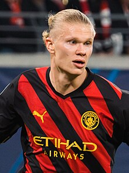

Erling Braut Haaland (norv.: Erling Braut Håland) (2000-yil 21-iyulda tugʻilgan) — norvegiyalik professional futbolchi, Premiyer-liganing „Manchester City“ klubi va Norvegiya terma jamoasida hujumchi sifatida oʻynaydi[4].
Yoshlar tizimi orqali Haaland Brynening zaxira va katta jamoalarida yuqori darajada oʻynadi. U 2017-yilda „Molde“ga koʻchib oʻtdi (shuningdek, ularning zaxira jamoasida ham oʻynadi), u bilan ikki mavsum oʻtkazdi. Haaland 2019-yil yanvar oyida Avstriyaning Bundesliga jamoasi Red Bull Salzburg bilan shartnoma imzoladi va ikki marta liga chempioni va bir marta Avstriya kubogini qoʻlga kiritdi.
Yoshligi
Haaland 2000-yil 21-iyulda Angliyaning Lids shahrida tugʻilgan, chunki uning otasi Alfi Haaland oʻsha paytda u yerdagi mahaliy jamoa „Lids United“da oʻynagan[5]. 2004-yilda, uch yoshida, u Brynega shahriga oilasi bilan koʻchib oʻtdi[6][7].
Haaland yoshligidan futbol oʻynash bilan bir qatorda, bolaligida turli xil sport turlari, jumladan, qoʻl toʻpi, golf va yengil atletika bilan shugʻullangan
Bosh menyu